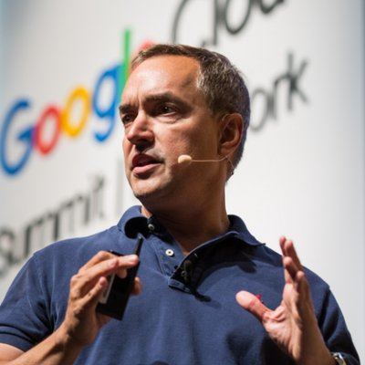

Scott Penberthy

With Lee Hood at the Google Cancer AI Symposium — 2,000 world experts convened since founding
Artificial Intelligence is becoming the operating system of reality.
I’ve spent the last thirty years helping build the systems that made this possible.
MIT at sixteen. PhD in AI. Early internet infrastructure at IBM. A billion photos at Photobucket. Planet-scale video AI at Google.
The pattern took decades to see clearly: the architectures that learned to understand images and video are now learning to understand biology.
Media → Molecules. Pixels → Proteins. Video models → Drug discovery.
What started as software for the internet is becoming software for life itself.
The Transition
AI is shifting from automation to infrastructure. Entire industries are reorganizing around models that can learn from massive data, approximate complex systems, and predict outcomes before they occur. The economic consequences will be measured in trillions.
Most people will recognize this change only after it is obvious. I’m documenting it while it’s still unfolding.
AI Money Moves
One real deployment per day. Real companies. Real deployments. Real outcomes: revenue growth, cost reductions, operational leverage, and new capabilities. Each case is a point in a much larger map.
Current Work
Building AI systems at Google trained on billions of hours of video and multimodal data.
- Board Member — Lustgarten Foundation (pancreatic cancer research)
- Advisor — Stanford Medicine Tumor Board
- Advisor — NASA Frontier Development Lab
Earlier
- PhD in Artificial Intelligence (MIT → University of Washington)
- IBM — Technical Assistant to CEO Lou Gerstner; early web infrastructure and application servers
- PwC — Chief Technology Officer; led a multi-year technology transformation
- Google Cloud — Office of the CTO; enterprise AI and healthcare
- 300+ briefings and keynotes to Fortune 500 boards, sovereign wealth funds, and heads of state
I Work With
- Sovereign wealth funds shaping national AI strategies
- Pharmaceutical leaders exploring AI-driven drug discovery
- Boards evaluating large AI investments
- Healthcare investors assessing technical theses
Subscribe
I publish AI Money Moves on Substack: one case study a day, documenting where AI is already working.
Photobucket → planet-scale video AI → drug discovery. It took thirty years to see the through-line. Now I’m writing it down — one case at a time.